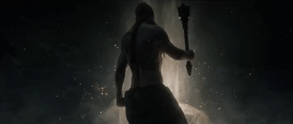
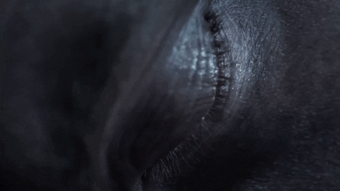

THE SHATTERING

The Lands Between are defined by both immense tragedy and majestic history, ruled by the immortal Queen Marika the Eternal and governed by the Elden Ring—a primal force of cosmic order. From this ring springs the Erdtree, a towering beacon of golden grace that grants life, rebirth, and divine power throughout the realm. For ages, death was not an end, as Queen Marika had removed the Rune of Death from the Elden Ring, binding the souls of the departed to the roots of the Erdtree and maintaining a fragile, golden age of golden order.

That stability shattered in an event known as the Night of the Black Knives, when assassins stole a fragment of Death and slew Demigod Godwyn the Golden. Driven to grief or rebellion, Marika smashed the Elden Ring into pieces, triggering the Shattering—a bitter, devastating civil war among her demigod children. Each demigod claimed a Great Rune of the shattered Ring, but the corrupting influence of their newfound power drove them to madness and stalemate, leaving the Lands Between fractured, abandoned by the Greater Will, and rotting under the weight of endless war.

You awaken as a Tarnished—one of the exiled warriors stripped of grace long ago, now summoned back across the Fog by the fading light of guidance. With the demigods locked in a bloody deadlock and the world suspended in ruin, your calling is to wander the shattered kingdoms, overcome the fallen lords, and claim the Great Runes. Only by gathering the fragments can you journey to the base of the Erdtree, mend the Elden Ring, and take the throne as Elden Lord.